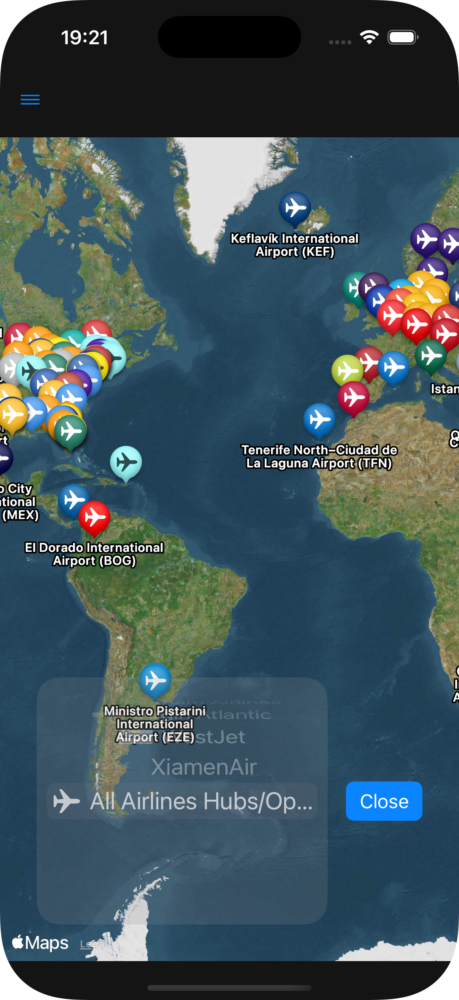
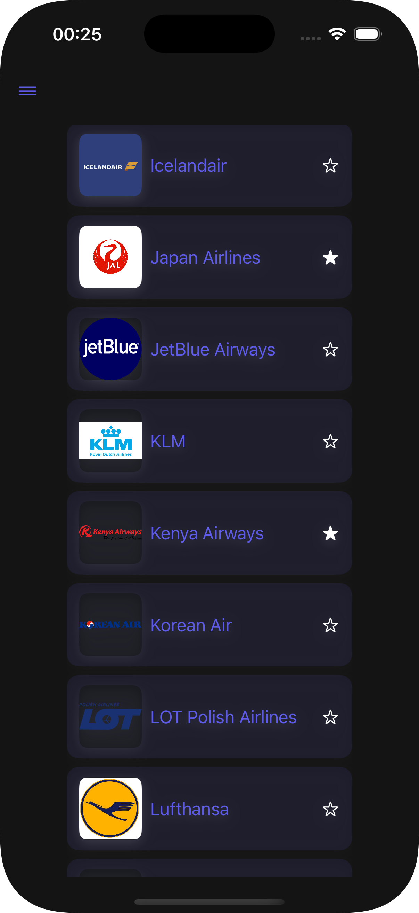
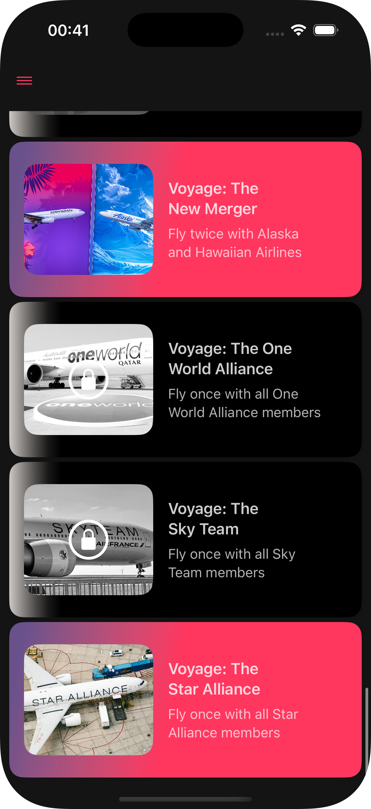
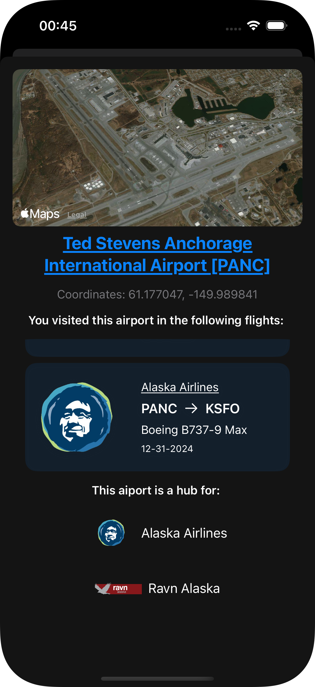
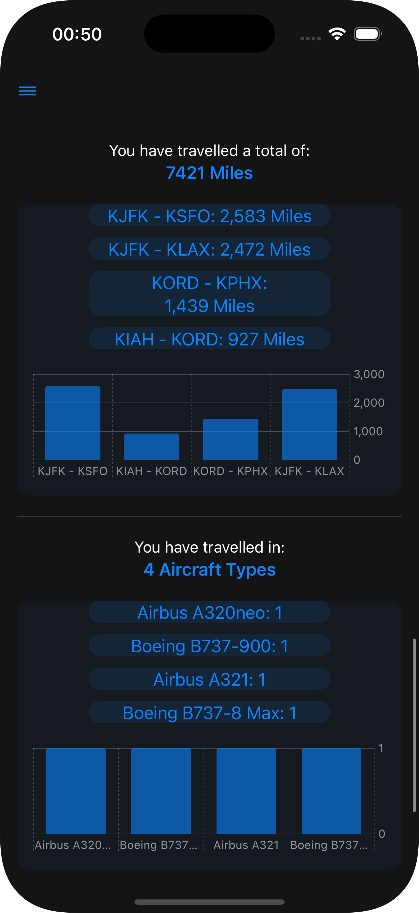
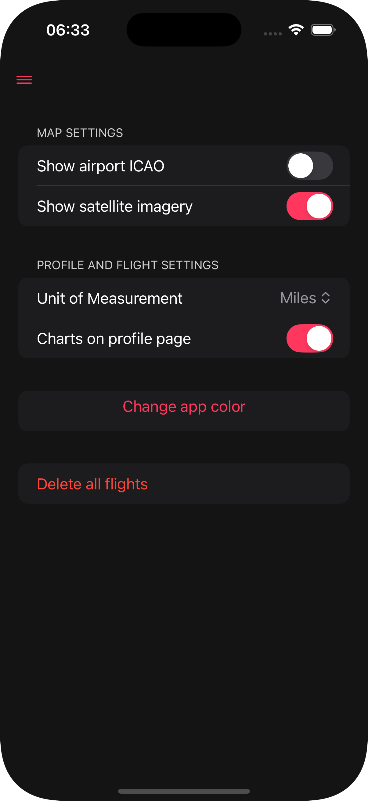
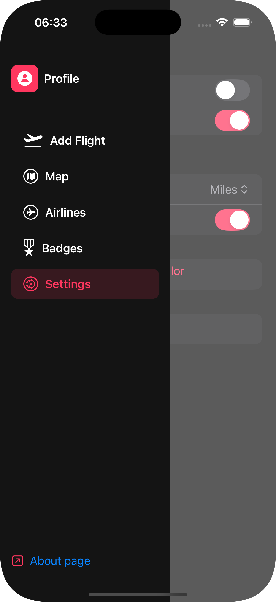

FlyLines
Table of Contents
1. Specifics of the Development
2. Features
3. Privacy Notice
4. Feedback
5. Updates
6. Resources
7. Screenshots
FlyLines is my second iOS app released to the App Store. As a continuation of my previous work, Vocab, I decided to dive deeper into different frameworks and more detailed views
This page will mostly be talking about development and descriptions of the app
The app's original name was "InitialPlace", which then got changed to "SoaringSkyPath", and eventually "FlyLines"
Specifics of the development
- - Language: Swift 6
- - Lowest iOS: iOS 17.0
- - Features such as the map may require an internet connection, but the app is fully functional without one
- - IDE: XCode 16.2
- - Simulated Environment: Iphone 16 and Ipad Air 13-inch (M2)
- - Technologies utilized: SwiftUI, MapKit, Charts Framework
Setup
Development started on December 22nd, with the app being sent for review on January 2nd, 2025
The app was initially denied over a naming convetion problem, being sent for review again on January 6th, being approved and released two days later, on January 8th, 2025
Features
The app's main focus is being a flight logger with a connected flight route map. It is composed of 6 main pages/views. We will explain these views in this section. Helper views will be discussed last
Profile Page
The profile page shows the user's logged flights and statistics about those flights. Both the flights list and the statistics list are presented via a dropdown menu, and can be collapsed or expanded as the user's desire
Each flight will be displayed with a Fligh Summary View, which shows the following information the following information:
- The flight's airline symbol/logo in the left side
- The airline's name
- The origin airport and destination airport's ICAO Code, with an arrow pointing the direction of the flight
- The aircraft type
- The date the flight was done
The statistics section will display the following information, in this order
- Number of flights logged
- The number of airlines the user has flown with and a list of the airlines with the amount of flights in each one (ranked by amount of flights)
- The number of airlines the user has flown to or from and a list of the aiport with the amount of flights in each one (ranked by amount of flights)
- The number of states the user has flown to or from and a list of the states with the amount of flights in each one (ranked by amount of flights)
- The number of routes (combination two airports, regardless of direction) the user has done and a list of the routes with the amount of flights in each one (ranked by amount of flights),followed by two side by side lists of which airports the user has departed from and which airports the user has arrived at, both ranked by amount of flights
- The amount of miles travelled and list of route's mileages (ranked by longest to shorted)
- The number of aircraft types the user has flown in and a list of those ranked by amount of flights in each one
- Three side by side lists ranking the user's location, row and type of flight seats
Add Flight Page
This page serves as the actual "flight logging" section of the app. For a flight to be logged, the user has to present the following information
- Origin and destination airports, which can be searched via full name or ICAO code (some airports may have their IATA code also added to facilitate searching). This area is mandatory, and the "Save" button will not be active if the fields are empty or if the specified airport is not recognized
- The airline the user flew with. This list ordered alphabetically and will default to the first airline. Favorite airlines will appear at the top of the list, and will contain a star next to their name
- The aircraft type the user flew in. This list is also sorted alphabetically and will default to the first value. The options shown are only types that are currently part of the selected airline's fleet, therefore, this list is bounded by the airline the user has selected
- The seat type: economy, first or business
- The row number: from 1 to 88 (88 was chosen as the maximum value as, from some sources I read, is the maximum row number is any commercial airlines, coming from Emirates Airbus A380)
- The seat location: window, middle or isle
- The flight's date, which defaults to the current date bu can be modified with a calendar picker
Once this information is filled, the "Save" button can be pressed to log the flight. An animation with the airline's logo and "Flight Saved" will appear, and the origin-destination airport text fields will be emptied. The background of this animation is a gradient between the airline's color and the user's app color of choice
Map Page
The map page is the most visually appealing section of the app. It utilizes the MapKit framework to display an Apple Maps instance.
Initially, the map will be completely empty, and will focus on the continental United States.
A "Choose Airline" is visible at the bottom. Clicking on it will pull up a rotating list of all airlines available, alongside their symbol/logo. Choosing an airline by rotating to it's position will add markers to the map with the airline hubs. The markers will have the airline's color, not the user specified app color.
- - My Flights: The first and default choice on the list. This will display all airports the user has visited, with geodesic lines between them. The markers and the lines will be displayed with the user specified app color. The lines get more pronounced (bright) the more times the user flies between the two airports connected by the line (regardless of direction). Additionaly, the marker will contain a departure and arrival icon (SF Symbol) representing which airport was the departure airport and the arrival airport of any given flight
- - All Airlines Hubs/Operational Bases: The last option on the list, this will display all hubs from all airlines and this option
Once any of the options in the list are chosen, the map's camera will change to focus and display all options, following the default MapKit behavior. The user is able to move the map following the same controls of the Apple Maps app, and modifying the camera will make the panning stop
Clicking on a marker will pull up theAirport Info Card, which will be explained later
Airlines Page
The Airlines Page contains a list of all airlines in alphabetical order, with the airline's symbol, name and a star showing it's favorite status in rows.
Clicking on an airline will open it's Airline Info Card (which will be explained later as well), and clicking on the star will switch the airline from favorited or not. The star will be filled if the airline is favorited and empty if not
Badges Page
The Badges Page contains a list of badges that serve as achievements for flying, adding a gamefication element to the app.
Badges can be either locked or unlocked
- Locked Badges will have a gradient background from white to black, it's image will have a greyscale and a lock will be placed on top of it
- Unlocked Badges will have a gradient background from indigo to the user's app color, and it's image will be in it's original colors
Badges can have several types, which are defined by it's unlock parameters, and can identified by it's name. The following list contain all current badges (as of version 1.0.0), with it's unlock parameter and an example that is present in the app currently (more specifically, the first badge from that type alphabetically)
- Bank Angle: An unusual event happened to your flight
- Flighpath: The user completed a specific list of routes (regardless of the order)
- Frequent Flyer: The user has visited all hubs/operating bases from a certain airline using that specific airline
- Skyline: The user has flown with aircraft types from a specific aircraft manufacturer a specific amount of times
- Soaring: Fly an specific aircraft an arbitrary number of times
- Voyage: Fly an arbitrary amount of times with all specified airlines
Example -> Bank Angle: Diversion - Have a flight divert back to it's departure airport
Example -> Flightpath: Island Hopper - Complete all legs of United Airlines Flight 155, the Island Hopper
Example -> Frequent Flyer: Alaska Airlines - Fly Alaska Airlines to all hubs/operating bases from Alaska Airlines
Example -> Skyline: Airbus - Fly an Airbus jet ten times
Example -> Soaring: The Best Seller - Fly five times in a Boeing B737
Example -> Voyage: Low Cost Carriers - Fly one time with each of the Low Cost Carries in the U.S.
Settings Page
This page allows the user to modify some aspects of the app to make the app experience better
The following are the possible settings the use is allowed to change
- "Show airport ICAO": Switches between airports' full name and it's ICAO Code in map views
- "Show satellite imagery": Switches between the default Apple maps style and a satellite image of the maps
- "Unit of Measurement: Used to calculate flight mileage. The user is allowed to switch between: feet, meters, kilometers, miles and nautical miles
- "Charts on profile page": Enables or disables the charts on the stats section of the profile page as some users may prever a simplified view with no images/charts
- "Change app color": Pull a wheel picker where users can choose the color of most UI elements
- "Delete all flights": Removes all flights from the user's data. This is not a reversible action, as data is only saved locally, and the user will see a warning message before confirming this choice
Other Pages: Airport Info Card
The airport info card shows up if an airport pin is clicked in any map view
It will display:
- Information about the airport, such as name, ICAO and/or IATA codes and coordinates
- A map of the airport satellite imagery slowly rotation around it
- A list of flights taken from or to this airport
- Followed by a list of which airlines use this aiport as a hub
Other Pages: Airline Info Card
Clicking on an airline in the Airlines Page will bring up that airline's info card
This page consists of:
- The airline's symbol/logo, followed by it's name and ICAO code
- A map view with the airline's hubs pinned
- Flights taken with this airline or a message saying that no flights with this airline have been taken
- A list of badges this airline is a part of
- A list containing this airline's fleet
Other Pages: The Sidebar
The sidebar can be accessed in any page by clicking the three lines on the top left of the screen (the color of this icon is dependent on the user's app color selection)
The sidebar contain links for all main pages as well as a link to the "About page", which is the page you are currently in
Privacy Notice
FlyLines does not gather or store any info from it's users
All information on the app is saved locally and is not sent to any servers or third-parties
Deleting or removing flights is a permanent move, as FlyLines does not create any backup or external storage of user's information
The entirety of the FlyLines App code is available in the Github link at the top of this page or through the following link:
Feedback
if you have any feedback, concern, question or critique, feel free to send an email to panoramic56@proton.me
I will gladly accept any valid suggestion and incorporate it into my next projects or future versions of this one
Updates
Whenever this page is published, no updates will be done yet, however, version 1.0.1 is being developed and it's changes will be noted here
Version 1.0.1
New Profiles View style, with a switch style button for flights and stats lists
Airline fleets list added to the Airlines View
Airline search bar now starts with the IATA code to simplify searching. Full name can still be used and this change should not affect that
Resources
Here are some resources I utilized in order to make this app, in no specific order. All of these will hace links to them
- The SwiftUI Org Website
- MapKit Framework Website
- The Swift Charts Framework Website
- iOS Academy Youtube Channel
- Sean Allen Youtube Channel
- AppStuff Youtube Channel
- The Apple Developer Youtube Channel
Screenshots
-
The Map Page - Airlines
This image of the Map page shows the "All Airline Hubs/Operating Bases" selection, with the colorful markers over the airline hubs. The screenshot can only accomodate this section of the map, but all airline hubs were drawn even outside this range
 -
The Map Page - Lines
This image of the Map page shows the difference between a more travelled route (KSEA - KSFO) and a less travelled route (KSFO - KSLC), with the latter being less prominent

-
Airline List Page
The list of airlines, with some being favorited (with the full star) and some not (empty star). Clicking on the star changes it's favorite status
 -
Badge Page
The badges page, with some being unlocked (colorful) and some locked (black and white)
 -
Airport Info Page
Clicking an airport pin will bring this page, with the airport info
 -
Stats Page
A page showing stats. with the charts setting enabled
 - Settings Page 
- Sidebar View 